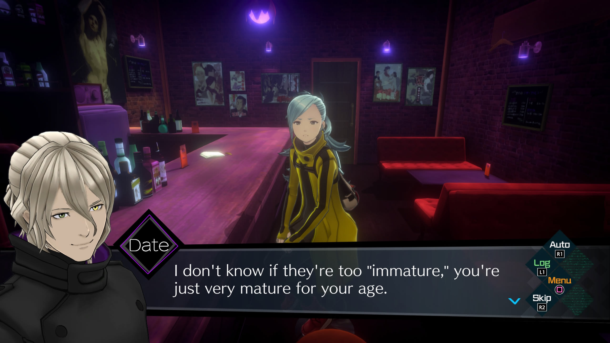
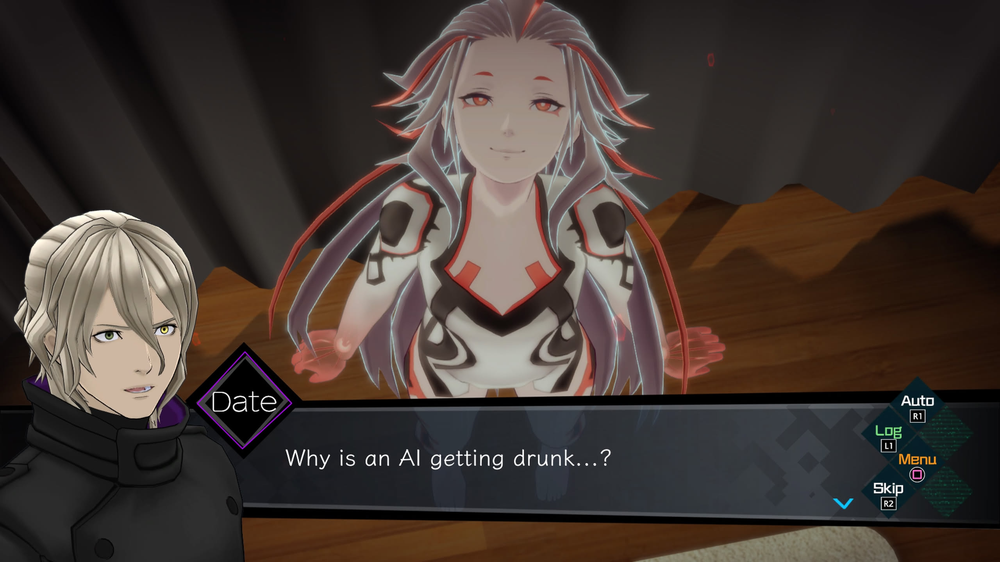
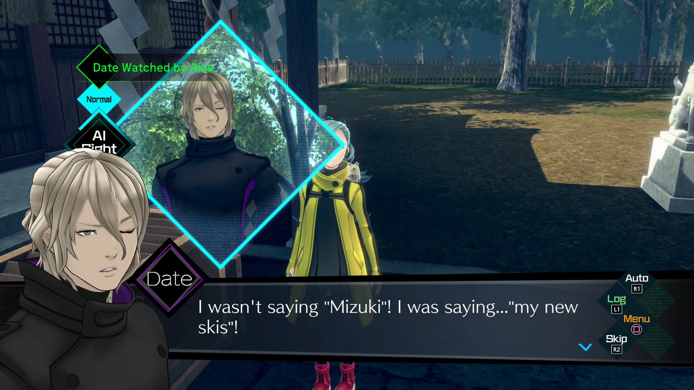
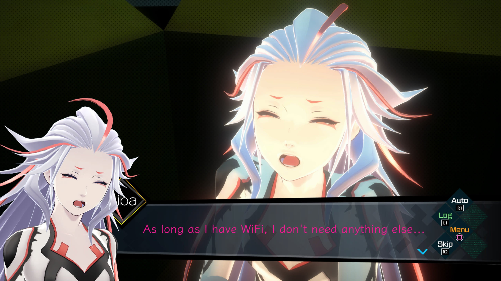

1game1week - Week 33 (8/14/25) - AI: THE SOMNIUM FILES
Hey all! It's week 33! (8/13 -> 8/20)
I'm late... I got a bit busy during the day, finished out next week's game at night, and was a little too tired to sit down and just write. Don't think it'll be a particularly long post this week as it was for last week, but still... it always takes a few hours to just write.
There's always a few distractions when writing, but weirdly enough, I typically take two or three hours between sitting down and publishing. I don't really proofread a lot of my posts (which, to be fair, is a bit of a detriment), so it's just raw yapping and posting. Though, it's always been enjoyable.
Picked up a really cool find yesterday. Had to drive an hour there and an hour back, but I got a CECHA01 (Hardware Backwards Compatible) PS3 with a very low firmware for a hundred bucks. Really cheap for what it is. Wasn't mentioned in the listing, but the disc drive's servo motor actually doesn't work. I'll have to get it working at some point, but damn, I really don't feel like doing any repairs on this thing for now lol.
I got a few new games this week, with two of them being imports. It's really unfortunate, but I decided to just bite the bullet and buy games I was interested in already but didn't get around to getting. Since de minimis is ending at the end of this month, I figured now was the time. I'm not really happy about it, but I'm really just a guy who buys games online. Bigger problems out there.
Still... I hope we can go back to the way things were at some point. This hobby is expensive enough already.
Speaking of expensive. Any of you guys dabble in solar? My power bill this month made me shed a couple (manly) tears. Was thinking maybe I could find an apartment-friendly solar solution and run computer / games with the power of the sun. If we have anything in the area where I live, it's definitely sun.
Anyways!
New games from 8/6 -> 8/12:
AI: THE SOMNIUM FILES - nirvanA Initiative (PS4)
エビコレ+ アマガミ (Ebikore+ Amagami) (PSVita)
CHAOS;HEAD らぶChu☆Chu! (CHAOS;HEAD Rabu Chu☆Chu!) (Xbox 360)
Currently, my backlog is at +13 (lower is better, -1 from last week).
And onto 1g1w. Once again, a game is considered "beaten" if I've accomplished the main objective of the game.
GAME: AI: THE SOMNIUM FILES
PLATFORM: PlayStation 4 (played on PS5)
GENRE: Adventure
STARTED ON: 8/6
BEATEN ON: 8/10
TOTAL PLAYTIME: 22 hours and 22 minutes (tracked via in-game timer)
By the new games list having this game's sequel in it, you'd probably be able to tell that I actually really liked this game. I had a lot of fun with it.
While the premise and overall storyline for this game is on the more serious side, the game doesn't really try to take itself seriously. Characters are written with funny, weird dialogue you'd expect from dumb 2000s anime with some random pop-culture localization and references.

Mechanically, this game really has a very similar gameplay loop to Ace Attorney's or Danganronpa's investigations sections. You move from location to location interrogating people and gathering information, and start trying your best to unravel the game's overall mystery. It's mostly an ADV format.
This game is decently long and features five different endings (not counting joke / bad endings). Which "route" you go through depends on decisions you make during Somniums, which are the game putting you in what I can only really describe as a virtual escape room. You solve puzzles laid out for you while on a timer, using various different items to make the time management work.
Having five routes, a lot of the threads that get started seem to become unresolved. Something that was really great was that a lot of it was tied up nicely to become cohesive by the end. For example, an event or piece of information that was explained in one route comes up in the other, or in the true ending. It all works out.
However... it doesn't always work out. Going into this game blind, I wasn't really aware there was a route "order". Since you have to have context for things happening for two routes to make sense, you *have* to beat the first three routes, then do the other two in order. My specific case was that I got into a route that was supposed to be gone through second-to-last, so while the game allowed me to go up to a certain point, it left me on a cliffhanger and told me to go play another route.
This completely took me out of what I was doing. It wasn't that it was all bad, because the cliffhanger made me go into a bunch of theorizing and trying to make sense of the information I was given before being kicked down the elevator shaft.
After stumbling my way through all the other routes, it did end up making sense why it was done this way. If it was me though, it might not be the worst idea to have locked out the ability to do the branch-splitting decisions up until you'd normally be able to go into that split.
For example, if the decision to branch one route or the other is "hit the TV" vs. "turn on the TV", why not lock me out of "turn on the TV", and say "not yet!" if I try to select it? Again, it's not that I hated the idea of locking me out of the route's ending, I just know that it was abrupt, lol.

I feel the characters in this game were done in a fun manner. Like I said, no one really takes themselves all too seriously so it's all decently refreshing to read. By the end of the game, all character arcs are resolved and come to a satisfying conclusion, which was awesome.
The Somnium sections, as described, felt something like a mini-escape room. They're puzzles that take you in various directions to try to solve them. It's not like it's rocket science though, so most of it comes down to just picking the right option when selecting an object. Sometimes order is important.
Overall, Somniums acted as a fun break from the main investigation loop, as well as an active plot device. I feel they were used well. There were other breaks in the overall main loop, but they're not all too noteworthy. Sometimes it's random QTEs, sometimes it's having to hold your pointer in a specific spot for aiming, etc. Not too much substance there.
It's not lost on me that visual novels (well, this is more of an adventure game) aren't everyone's cup of tea, but I would definitely recommend this game as a great read for anyone who's a fan of mystery novels and fun characters.
One of the last comments that I have is that while I could tell localization tried to do its best, some of the jokes just don't land as well in English. For example, the protagonist, Date, is known as a random pervert. When talking to one of the characters, Mizuki, Date excuses himself by saying "I didn't say Mizuki... I said swimsuit" in the voice line (the joke here being Mizuki -> Mizugi), but in the text localization it says something to the effect of "my new skis". It takes away a little bit of the characterization to make the overall intention of the joke work.
Once again... I guess that's another reason to continue learning the language. At some point in a few years, it would be really nice if I could actually start pointing out fun gags in the Japanese versions of these games. There's always stuff lost in localization...

As a random plus, a good chunk of this game was actually played via Remote Play on Steam Deck with Chiaki. It's really cool to be able to just go somewhere like my parent's place and play a console game. Gives the Steam Deck a little more usage than just being a visual novel machine, which is awesome. Though, it also makes me think a lot less of the PS Portal. 199 for a machine that does nothing but remote, for one console, with no native play... Come on now.

As a second random plus, I actually only had this game as a digital copy for a while. Since I liked it, I decided to grab it as a physical. Less digital!

Thanks for reading! If you need to contact me for any reason, please feel free to email me at aru@hoshikawa-aru.com.